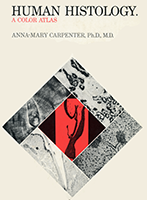
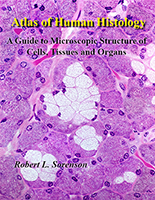

Download the User Guide v1.1 (PDF) to learn about new platform features.
Do you have microscope slides, EM micrographs, or other educational materials that could enhance Histology Guide? We would like to hear from you at tcbrelje@gmail.com.
Our Mission
Histology Guide is an innovative digital platform designed to teach students to identify cellular and tissue structures and understand how they relate to their biological functions. Unlike traditional textbooks or atlases, this interactive environment promotes the development of interpretive skills through hands-on exploration of high-resolution microscopic specimens.
This website and the accompanying textbook, Atlas of Human Histology: A Guide to Microscopic Structure of Cells, Tissues, and Organs, were developed by Robert L. Sorenson, Ph.D., Professor Emeritus, Distinguished Teaching Awardee, and T. Clark Brelje, Ph.D., retired faculty from the Department of Genetics, Cell Biology, and Development at the University of Minnesota School of Medicine, Minneapolis, MN.
Our Story
For over a century, the Department of Anatomy at the University of Minnesota School of Medicine (Minneapolis, MN) meticulously prepared, stained, and preserved tissue samples that reveal the microanatomy of human cells and tissues. These slides are more than just tissue sections; they represent a legacy of excellence by generations of department members.
This resource builds on a long history of teaching at the University of Minnesota. The teaching collection was developed during the 1950s and 1960s under the leadership of Anna-Mary Carpenter, Ph.D., M.D. It was made more widely available through the publication of Human Histology: A Color Atlas by Anna-Mary Carpenter, Ph.D., M.D., published in 1968. It also served as the primary source of the light micrographs for the Color Atlas of Histology, by Stanley Erlandsen, Ph.D., and Jean Magney, M.S., published in 1992.


To present a broader range of specimens and advances in color printing, we published the Atlas of Human Histology: A Guide to the Microscopic Structure of Cells, Tissues, and Organs. Each specimen is presented as a series of photographs at increasing magnifications to provide context, and a sense of scale and proportion. This atlas gives every student an accessible printed summary of the essential slides on this site.
While traditional textbooks and atlases provide valuable images, they cannot replace the experience of viewing an entire specimen through a microscope. Histology Guide bridges this gap by presenting microscope slides in a virtual format that encourages exploration.
Each slide in our digital collection has been carefully chosen for its superior preservation, high-quality staining, and ability to demonstrate key structural features. Over five decades of teaching, many additional microscope slides were produced by us, other institutions, and individual contributors.
Stanley Erlandsen, Ph.D directed a core facility for electron microscopy. This site presents much of his own work, along with numerous images collected from his colleagues, to support histology education.
We gratefully acknowledge our students who provided the impetus and guidance in creating a presentation of histology that facilitates their acquisition of knowledge of the microscopic structure of cells, tissues, and organs. It was the students who taught us how best to teach them.
Our Host Institution
Originally developed for students at the University of Minnesota, it has grown into one of the most widely used histology resources on the internet.
The Department of Genetics, Cell Biology, and Development at the University of Minnesota School of Medicine (Minneapolis, MN) and the College of Biological Sciences, Research and Learning Resources, provided support and resources to make this site available to a global audience.